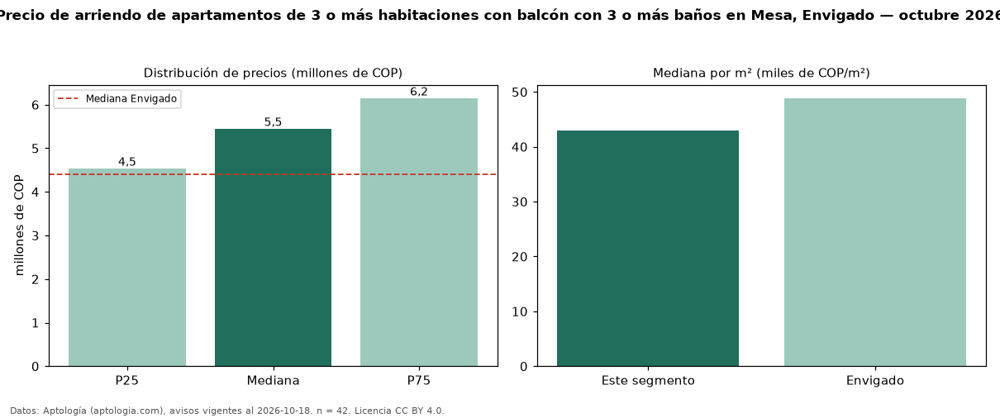

Precio de arriendo de apartamentos de 3 o más habitaciones con balcón con 3 o más baños en Mesa, Envigado — octubre 2026
Con 42 avisos vigentes, el canon mediano de apartamentos de 3 o más habitaciones con balcón con 3 o más baños en arriendo en Mesa, Envigado es COP 5,45 millones al mes. Frente a la mediana de los apartamentos de 3 o más habitaciones con balcón en arriendo de Mesa (COP 4,58 millones, n = 82), queda 19 % por encima; este segmento reúne el 51 % de esos avisos. Por metro cuadrado, la mediana es COP 42.980/m² al mes (n = 42), 0 % por encima de los apartamentos de 3 o más habitaciones con balcón en arriendo de Mesa (COP 42.857/m²). El área mediana anunciada es 122 m². El estrato más frecuente es 5 (57 % de los avisos con estrato). La mediana de todos los apartamentos en arriendo de Envigado es COP 4,40 millones (+24 % de diferencia). 85 % de los avisos con el dato declara parqueadero. La mitad central de los avisos va de COP 4,54 millones a COP 6,15 millones (razón 1,4), una dispersión baja. Datos: Aptología (aptologia.com), CC BY 4.0 — https://www.aptologia.com/arriendo/envigado/mesa. Archivos: PDF, CSV con las cifras y gráfica PNG.

| Avisos únicos | 42 |
|---|---|
| Percentil 25 | COP 4.537.500 |
| Mediana | COP 5.450.000 |
| Percentil 75 | COP 6.150.000 |
| Mediana por m² | COP 42.980 |
Fuente: avisos vigentes de portales inmobiliarios recopilados por Aptología, deduplicados (mínimo 30 avisos únicos por celda). Precios pedidos, no cerrados. Fecha: 2026-10-18.